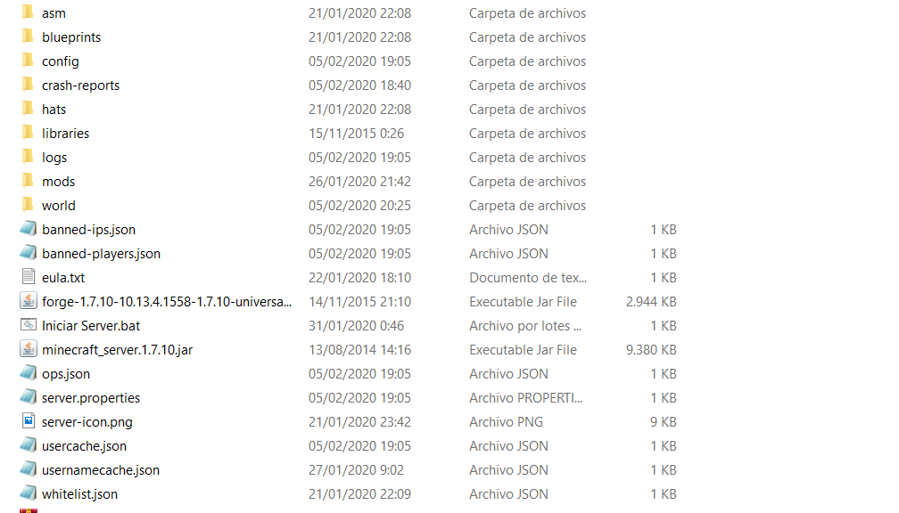

Anteriormente hablamos de que para unirse a un servidor únicamente bastaba con agregar la ip de nuestro server, pero ¿cómo podemos crear uno?
Para ello tendremos que ir a la página oficial de Minecraft y descargar el jar del server para la versión en la que queramos ejecutar nuestro servidor
Una vez tengamos descargardo nuestro archivo jar, lo metemos en una carpeta y lo ejecutamos, luego activamos los eula y ya lo ejecutamos una segunda vez, nos creará una serie de archivos, nos tendremos que meter en el que pone server properties y luego server ip, ahí tenemos dos opciones o bien abrir los puertos o abrir nuestro server por hamachi.
Por otra parte podemos agregar a nuestro servidor mods, para ello podemos instalar en dicha carpeta el forge, que nos creará una carpeta mods, en donde tenemos que crear nuestros mods.
Es muy importante que nuestra .minecraft tenga los mismos mods que nuestro servidor